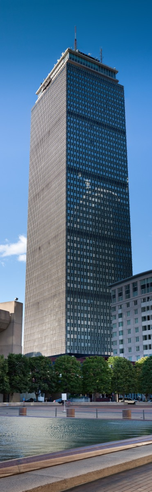
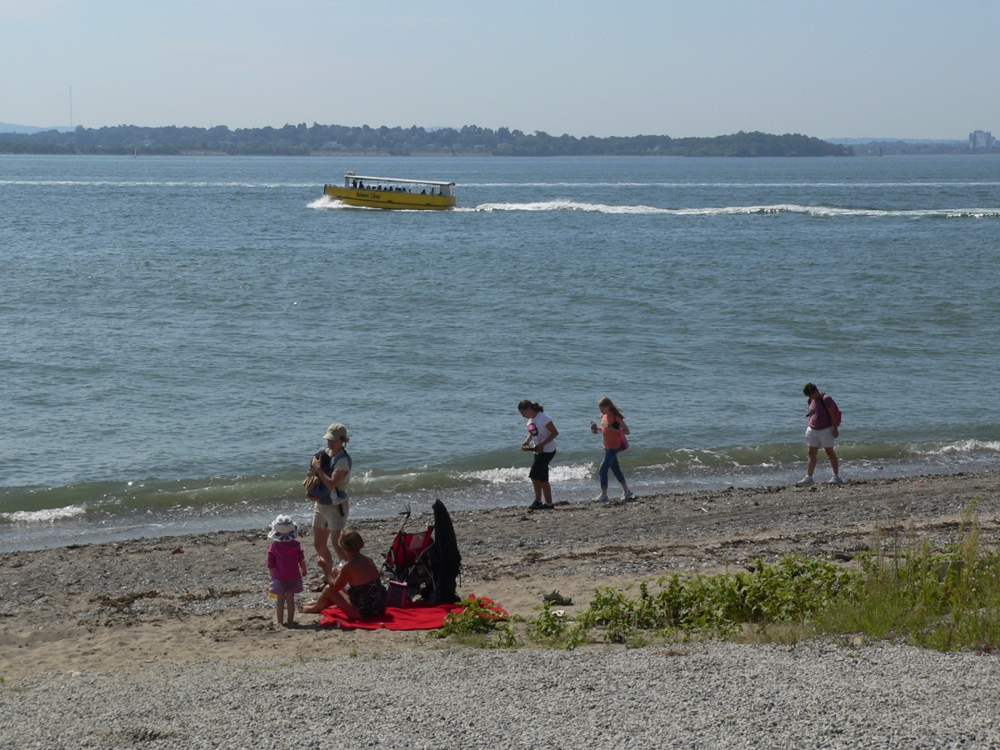

Boston is an unusually good city for a date, for a reason that has nothing to do with restaurants: it is small, and it is built around water. This guide has 34 date ideas, sorted by what kind of date you're planning: low-pressure first dates, dinner-and-a-view nights, active dates, rainy-day plans, cheap dates, and anniversary-level nights, plus tables by neighborhood and season.
The short answer
Five plans that never miss
The ones locals actually go on, across every budget.
01 · First dates
First date ideas in Boston (low pressure)
A good first date has an easy exit at the one-hour mark and an easy extension if it's going well.
Coffee on Charles Street, then the Public Garden and the Esplanade
Tatte, 70 Charles St, Beacon HillT Charles/MGH (Red)Coffee $4–6
Coffee, a loop of the lagoon and the Ducklings, and if it's going well, cross the footbridge to the Esplanade. An hour if you want it to be, three if you don't.
ICA Boston on a free Thursday night
25 Harbor Shore Dr, SeaportT Courthouse (Silver)Free Thu 5–9pm

A glass box over the harbor, free and social on Thursdays. The art gives you something to react to; the fourth floor has a floor-to-ceiling harbor view.
Browse Harvard Square bookstores, then a drink
Harvard Book Store, 1256 Mass AveT Harvard (Red)Free to browse

You learn a lot about someone from what they pick up. Open late; afterward, Charlie's Kitchen for a beer or a walk to the Weeks Footbridge.
Boston Public Market and the Greenway
100 Hanover StT Haymarket (Orange, Green)Lunch $10–20
About 30 local vendors under one roof. Grab lunch, eat it on the Greenway, then walk to the North End or the harbor.
Trivia night
Bars in Allston, Somerville, CambridgeWeeknights, ~7–8pmFree to play
Two hours, a shared task, a reason to talk about things other than yourselves. Dozens of bars run it on weeknights.
02 · Dinner with a view
Dinner-and-a-view dates
North End dinner, then the Harborwalk to Fan Pier
Hanover/Salem St to Fan PierT Haymarket to Courthouse (Orange)$40–80pp + free walk
Dinner, a cannoli, then a 30-minute walk to Fan Pier with the whole lit skyline across the channel. The best after-dinner walk in Boston, and free.
View Boston and the Prudential Tower
800 Boylston St, Back BayT Prudential (Green E)~$35, cocktails extra

Book a slot for half an hour after sunset, take two drinks onto the terrace, and watch Fenway's lights below you.
A rooftop in the Seaport
Lookout Rooftop, 70 Sleeper StT Courthouse (Silver)Cocktails $16–20
A straight-on view of Downtown across Fort Point Channel. Go on a weeknight before 7pm to skip the line.
Sunset ferry to Charlestown, dinner in the Navy Yard
Long Wharf ferryT Aquarium (Blue)$2.40 each way
A ten-minute harbor crossing that costs a subway fare. Pier 6 at the Navy Yard has a deck facing the skyline, with the USS Constitution next door.
03 · Active dates
Active dates: on the water and on two wheels
Kayak or paddleboard the Charles from Kendall Square
Paddle Boston, Kendall SqT Kendall/MIT (Red)~$20/hr pp, May–Oct
The Back Bay skyline in front of you, the Longfellow to your left. An hour on a tandem kayak produces conversation whether you want it or not.
Bluebikes along the Esplanade and back over the Harvard Bridge
Charles/MGH, Hatch Shell, Mass Ave stationsT Charles/MGH (Red)$2.95/ride, day pass ~$10
Ride the river path west to the Harvard Bridge, cross to Cambridge counting the Smoots, come back along Memorial Drive. About an hour, flat, mostly car-free.
Ferry to Spectacle Island
Long Wharf NorthT Aquarium (Blue)~$25pp round trip, May–Oct

A swimming beach, five miles of trails and a hilltop with the best full skyline view in the harbor. Pack a picnic.
Skating on the Frog Pond
Boston Common, 38 Beacon StT Park Street (Red, Green)~$8, late Nov–Mar
An outdoor rink lit at night, with the State House dome above it. Skate an hour, then a hot drink on Charles Street.
Walk the Freedom Trail, north half
Faneuil Hall, 4 S Market StT Government Center (Blue, Green)~90 min, free
Faneuil Hall through the North End to Copp's Hill, ending among the cafés on Hanover Street. A date with a built-in dinner.
04 · Rainy-day dates
Rainy-day dates in Boston
The Isabella Stewart Gardner Museum
25 Evans Way, FenwayT Museum of Fine Arts (Green E)~$22, free if you're Isabella

A Venetian palazzo around a glass-roofed courtyard, at its best when it's raining on the glass. The 1990 theft's empty frames are a conversation on their own.
A film at the Coolidge Corner Theatre or the Brattle
290 Harvard St / 40 Brattle StT Coolidge Corner / Harvard (Green C)~$14–16

A 1933 Art Deco movie palace and a single-screen repertory cinema doing double features since the 1950s. Either, then a drink within a block.
Bates Hall at the Boston Public Library, then Copley Place
700 Boylston StT Copley (Green)Free

Green lamps, long oak tables, a 50-foot vaulted ceiling. Then the enclosed walkway through Copley Place and the Prudential without stepping outside.
Bowling at Lucky Strike, then Time Out Market
145 Ipswich St / 401 Park DrT Fenway (Green D)~$8–10pp/game
Lanes, pool tables and a bar behind Fenway Park. Time Out Market five minutes away means you don't have to agree on a restaurant.
05 · Cheap & free
Cheap and free date ideas in Boston
The best dates in Boston are mostly free, because the best parts of Boston are public.
Jazz at Wally's Cafe
427 Mass Ave, South EndT Mass Ave (Orange)No cover, nightly ~6pm

Live jazz every night since 1947. Crowded, loud in the right way, full of people on dates doing exactly what you're doing.
Sunset on the Esplanade dock
Dock by the Hatch ShellT Charles/MGH (Red)Free
The Esplanade faces west, so the sunset happens over Cambridge every night. Summer Hatch Shell concerts and movies are dates in themselves.
Free museum nights
MFA / ICA / Harvard Art MuseumsVariousWed 4pm+ / Thu 5–9 / daily
The MFA is pay-what-you-wish Wednesday evenings, the ICA is free Thursday nights, and Harvard's museums are free every day.
Beacon Hill by gaslight
Charles St, Acorn St, Louisburg SqT Charles/MGH (Red)Best after 8pm
Gas streetlamps, brick sidewalks, an empty Acorn Street at night. Thirty minutes, ending at the State House or back on Charles Street.
A lobster roll on the waterfront
James Hook & Co., 440 Atlantic AveT South Station (Red)~$30–35, shared
Eat it on the seawall, walk the Harborwalk to Christopher Columbus Park. Under $40 for a date that beats most restaurants.
More in free things to do in Boston.
06 · Anniversary level
Anniversary-level dates in Boston
Reservations required, usually a couple of weeks ahead for a weekend.
Row 34
383 Congress St, Fort PointT South Station (Red)~$70–100pp
A brick-warehouse raw bar from the Island Creek Oysters people. Loud, confident, very Boston, five minutes from Fan Pier for the skyline after.
Mamma Maria
3 North Square, North EndT Haymarket (Orange)~$90–130pp
A four-story townhouse across from the Paul Revere House. The North End's anniversary restaurant since 1983, and still is.
Neptune Oyster
63 Salem St, North EndT Haymarket (Orange)~$60–90pp, no reservations
A tiny raw bar with the best hot buttered lobster roll in the city. Put your name down, walk the neighborhood, come back.
A cocktail bar with a view, then South End dinner
Contessa, 3 Newbury StT Arlington (Green)Cocktails $18–22
A drink at sunset facing the Public Garden, then Tremont Street, which has the city's highest concentration of good restaurants.
Boston Symphony Orchestra at Symphony Hall
301 Massachusetts AveT Symphony (Green E)From ~$30
One of the two or three best concert halls in the world acoustically. A concert followed by a late South End dinner is the classic Boston big night.
07
Date ideas by Boston neighborhood
| Neighborhood | Best date plan | Budget | Nearest T stop |
|---|---|---|---|
| Beacon Hill | Coffee on Charles St, Public Garden, Esplanade sunset, gaslight walk | $ | Charles/MGH (Red) |
| North End | Dinner on Hanover or Salem St, cannoli, Harborwalk to Fan Pier | $$–$$$ | Haymarket (Orange/Green) |
| Seaport | ICA (free Thu), rooftop drink, Row 34, skyline from Fan Pier | $$–$$$ | Courthouse (Silver) |
| Back Bay | View Boston, Bates Hall, Newbury St, Contessa | $$–$$$ | Copley / Prudential (Green) |
| Fenway | Gardner and MFA, Time Out Market, Lucky Strike, a Red Sox night game | $$ | Fenway / Kenmore (Green) |
| South End | Wally's jazz, SoWa on Sunday, dinner on Tremont St | $–$$$ | Back Bay (Orange) / Mass Ave |
| Harvard Square | Bookstores, Harvard Art Museums (free), Brattle film, the Weeks Footbridge | $ | Harvard (Red) |
| Kendall / Central | Kayak the Charles, MIT Museum, a show at the Middle East | $$ | Kendall / Central (Red) |
| Charlestown | Sunset ferry, Pier 6, USS Constitution, Bunker Hill climb | $–$$ | Long Wharf ferry / Community College (Orange) |
| Somerville | Bow Market, a brewery, the Comedy Studio | $–$$ | Union Square (Green E ext.) |
08
Boston date ideas by season
| Season | Do this |
|---|---|
| Fall (Sep–Nov) | Harbor Islands in September while the water's warm; Head of the Charles from the Weeks Footbridge in mid-October; foliage on the Esplanade and the Arnold Arboretum. |
| Winter (Dec–Feb) | Frog Pond skating, Common tree and Comm Ave lights, Holiday Pops, the Gardner courtyard, a long North End dinner. |
| Spring (Mar–May) | Cherry blossoms on the Esplanade, Swan Boats return, Fenway reopens, Lilac Sunday at the Arboretum in May. |
| Summer (Jun–Aug) | Kayaks on the Charles, Hatch Shell concerts and movies, Fourth of July Pops, North End feasts, sunset ferries, every Seaport rooftop. |
FAQ
Date ideas in Boston: common questions
What is a good first date in Boston?
A coffee and a walk. Get a coffee on Charles Street in Beacon Hill and walk through the Public Garden and the Esplanade, or meet at the ICA on a free Thursday night, which gives you something to talk about and a harbor view. Both are easy to end after an hour or extend into dinner.
What is the most romantic thing to do in Boston?
Dinner in the North End followed by a walk along the Harborwalk to the skyline at Fan Pier, or sunset on the Esplanade dock followed by a walk through Beacon Hill under the gas lamps. Both are free apart from dinner and both work in any season.
Where should we go for a date night dinner in Boston?
For a view, the restaurants along the Seaport waterfront or the bar at View Boston. For old-school romance, Mamma Maria in the North End. For seafood, Row 34 in Fort Point or Neptune Oyster. For a quieter table, the South End's Tremont Street and Shawmut Avenue have the best mid-priced restaurants in the city.
What are some cheap date ideas in Boston?
The Harvard Art Museums are free every day, the ICA is free on Thursday nights, the MFA is pay-what-you-wish on Wednesday evenings, and Wally's Cafe has live jazz nightly with no cover. The Esplanade, the Harborwalk, the Public Garden and Beacon Hill cost nothing. The Charlestown ferry from Long Wharf is a harbor cruise for the price of a subway ride.
What can couples do in Boston on a rainy day?
The Isabella Stewart Gardner Museum's glass-roofed courtyard, a film at the Coolidge Corner Theatre or the Brattle, an afternoon at Bates Hall in the Boston Public Library, bowling at Lucky Strike in Fenway, or a long lunch at Time Out Market. The Prudential Center and Copley Place are connected by covered walkways for a dry afternoon.
Is Boston a good city for a couples weekend?
Yes. It is compact, walkable and built around water, so a weekend can move from a harbor ferry to a museum to a North End dinner without a car. September and October are the best months, with warm days, cool evenings and the foliage starting; December has the holiday lights and the Frog Pond rink.